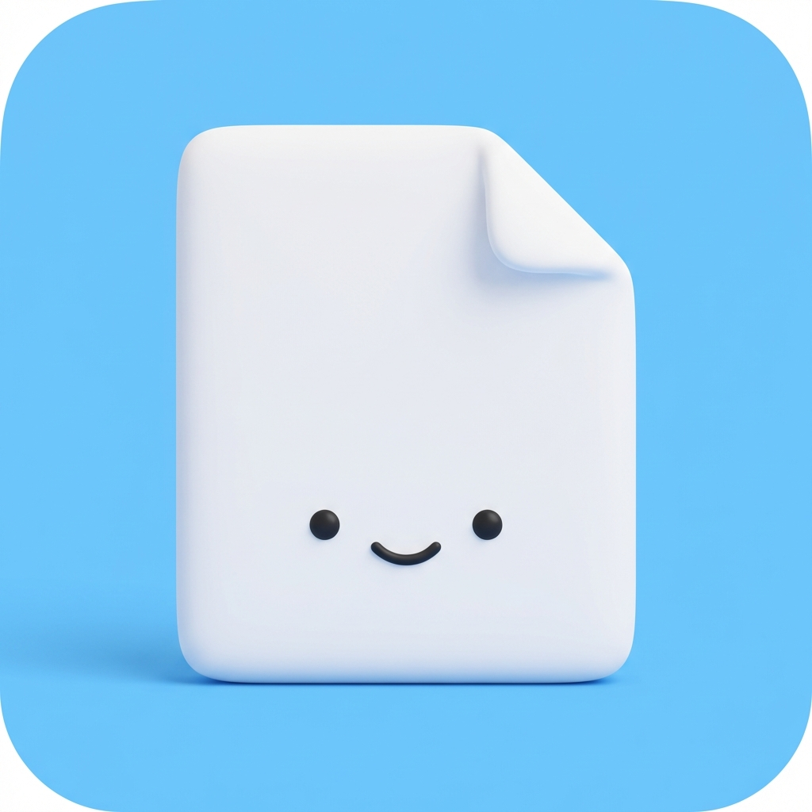
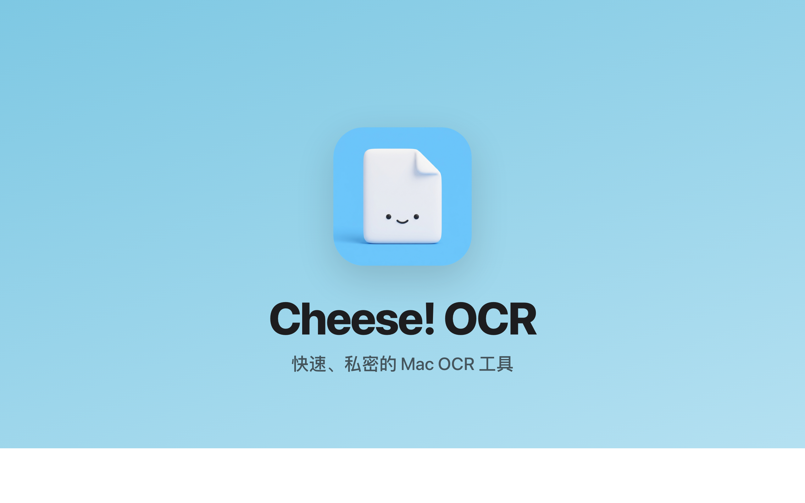
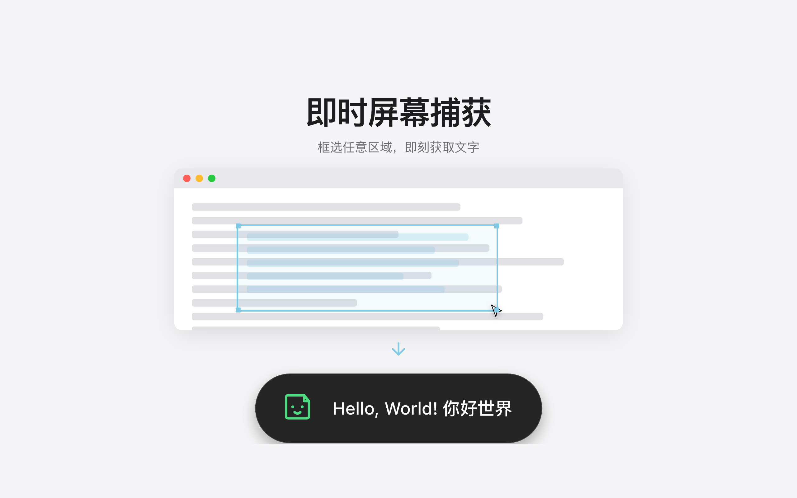
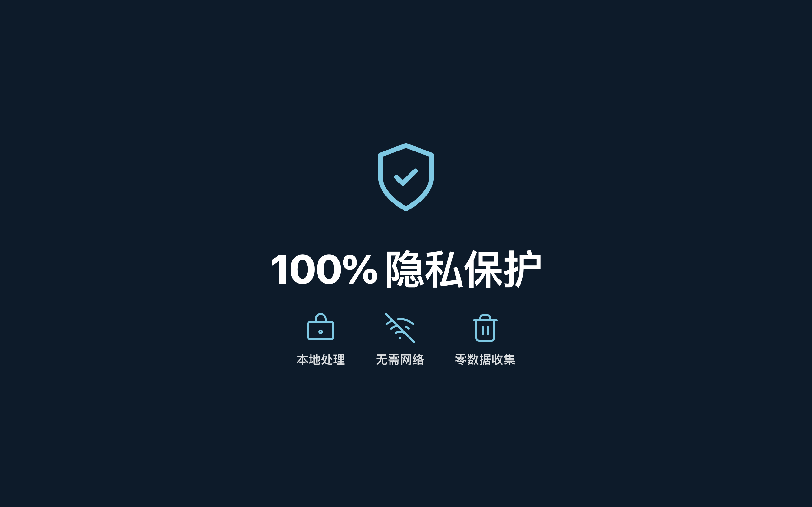
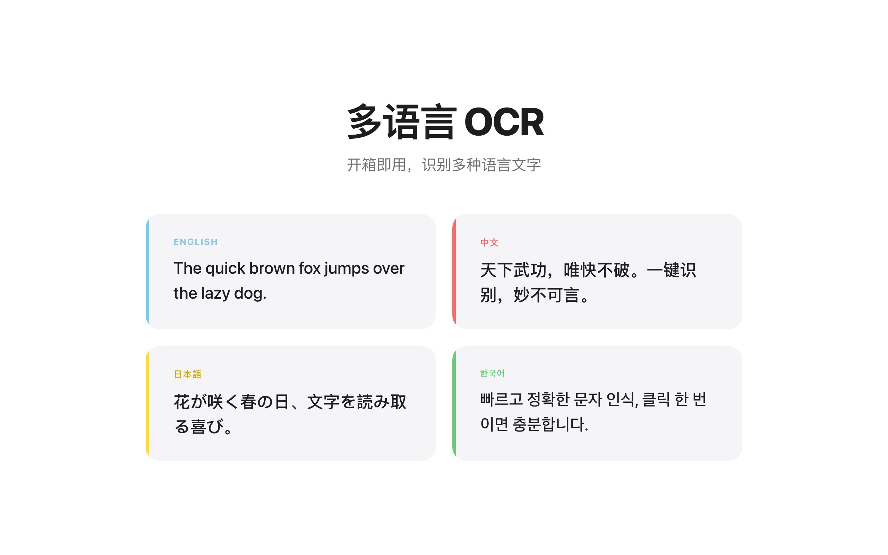
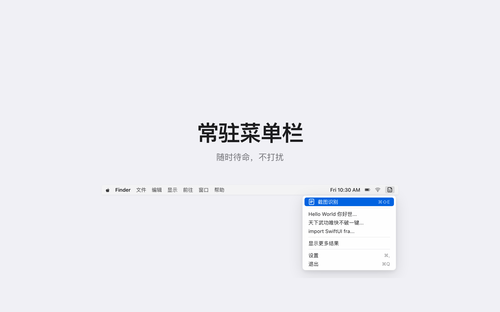

你需要的都在，不需要的都没有。
按下快捷键，框选任意区域，文字瞬间就出来。就这么简单。
全部基于 Apple Vision 本地运行，不联网、不收集任何数据。
开箱即用支持中文、英文、日文、韩文，中英混排也能正确识别。
识别结果立刻进入剪贴板，切到任意窗口直接粘贴，不用再点一次。
使用原生 macOS 框架构建，体积小、识别快，启动几乎无感。
所有识别结果自动保存到历史列表，随时查看和搜索，不再丢失。
一眼看清 Cheese! OCR 的核心能力。





日常工作里最常遇到的那些瞬间。
写论文遇到扫描版的参考文献，再也不用对着屏幕手动打字，框选一下就好。
看编程视频时暂停，直接 OCR 画面上的代码，粘贴进编辑器就能跑。
同事发来一张报错截图，几秒钟把文字提出来，就能拿去搜索或贴给 AI。
没有学习成本，一次上手终身受用。
用自定义的全局快捷键触发截图。
拖动鼠标选中包含文字的区域。
识别结果立刻进入剪贴板，随时粘贴。
用最短的答案回答最常见的疑问。